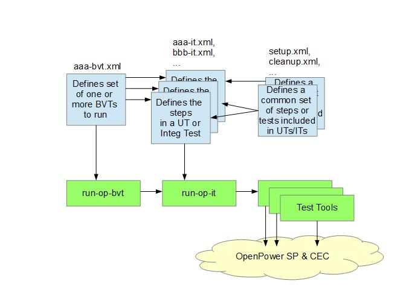

OpenPower Build Verification Test (BVT) Tools
Contents:
- Framework for running sets of development tests (UT and/or Integration Tests)
- Provides verification that a successful build meets some level of quality and functionality
- Each set can be run manually or automated with a single command
- Each set can be run against a OpenPower build area
- Self-checking and providing a single pass/fail exit code as well as individual test results and details for debug
- Different sets may provide different tradeoffs between verification level vs. execution time
- Very fast, but verification-level is only minimal "sanity test"
- ...
- Long running, but verification level is full regression of all components' UT

- High-level XML file (convention: "*-bvt.xml") defines which BVT(s) are run
- XML files (convention: "*-it.xml") define the sequence of steps in a individual Unit or Integration Test
- XML files can define common sequences of steps included in multiple other tests to avoid duplication
- High-level XML-file passed to run-op-bvt to execute
- run-op-bvt calls run-op-it to execute a Unit or Integration Test
- run-op-it calls test tools specified in the XML to communicate with the Service Processor and CEC
- Linux system with perl installed
- perl XML::LibXML package installed
Validate base tool is accessible and to get complete help text for it:
> run-op-bvt -?
Validate base tool infrastructure is in place and usable:
> run-op-bvt helloworld-bvt.xml
Run basic validation test using front-end bash script:
> vi op-ci-bvt
[ edit all lines which need different values in your test environment (see lines with ???) ]
> op-ci-bvt opci-basic-bvt.xml
Run basic validation test using args directly (e.g. from automated test):
> run-op-bvt --bmcip x.x.x.x --bmcuser xxx --bmcpwd xxx --usernameipmi xxx --passwordipmi xxx --cfgfiledir xxx --imagedir /path/to/pnor/images --imagename imagefilename bvtfile.xml
Validate and summarize BVT XML file without running it:
> op-it-list bvtfile.xml
The formal BVT XML schema is in op-it.xsd
This section is a summary/quick-reference...
<bvts> : base (outer) element
<bvt> :
defines a single BVT test
<id>xxxt</id> :
ID string for this BVT
<title>Some Descriptive Phrase</title> :
title string for this BVT
<restrict-env>...</restrict-env> :
The containing element will be skipped if not running in the environment
specified in <restrict-env>. This allows the same
XML to be run in different environments (e.g. different system types) with tests inappropriate in that
environment being automatically skipped. If this element is not
specified, the test will be run in any test environment.
<bvt-xml>relative/path/to/xxx-it.xml</bvt-xml> :
The name of the unit/integration test XML file that defines the logic and
sequencing for this BVT. See
UT/IT XML Reference
for instructions and syntax of this file.
</bvt>
</bvts>
The XML supports a general "parameterization" mechanism wherein it
contains placeholders that are replaced by values specified at runtime
via command line arguments. Placeholders are of the form
"%%xxx%%", where the double-percent-signs are the delimiters and the xxx
is the keyword/argument value to be replaced.
For examples, see op-ci-setup.xml where argument values specified on the run-op-bvt command are passed through to the run-bvt-setup script.
The formal BVT XML schema is in op-it.xsd
This section is a summary/quick-reference...
- <integrationtest> :
Base (outer) element
- <title>...</title> :
Title for integration test as a whole
- <platform> :
Start a block of tests that are run together.
- <test> :
Test Group (one or more)
- <name>...</name> :
Test Group Name (used in test output)
- <restrict-env>...</restrict-env> :
The containing element will be skipped if not running in the environment
specified in <restrict-env>. This allows the same
XML to be run in different environments (e.g. different system types)
with tests inappropriate in that
environment being automatically skipped. If this element is not
specified, the test will be run in any test environment.
- <testcase> :
Testcase - defines a single "step" to execute (one or more). The
testcase must contain one of the following elements...
- <cmd>...</cmd> :
Script or program to run on the system from which test is being driven
- Other optional elements in testcase:
- <exitonerror>yes|no</exitonerror> :
"yes" indicates to immediately terminate the integration test if this
testcase fails (default is to continue)
- <restrict-env>...</restrict-env> :
The containing element will be skipped if not running in the environment
specified in <restrict-env>. This allows the same
XML to be run in different environments (e.g. different system types)
with tests inappropriate in that
environment being automatically skipped. If this element is not
specified, the test will be run in any test environment.
- <arg>...</arg> :
argument(s) to pass to testcase (may also be specified directly within the execution element value)
- <ffdc>...</ffdc> :
relative pathname and argument to First Failure Data Capture script(s)
to run if this testcase fails. The default is to not run any script
(assumes enough debug information is written to stdout/stderr).
Muliple scripts may be specified, separated by commas.
- </testcase>
- </test>
- </platform>
- </integrationtest>
Valid at any point:
- <!-- comment text --> :
standard XML comments
- <include>...</include> :
Relative pathname to file containing additional XML to include (can be
nested). Include also supports specifying a "count" to implement
simple looping. If count is specified the file is run that number
of times at this point. For example, "<include count=3>..." (or
"<include count=%%loopcount%%>..." with "--loopcount 3" passed as
an argument) will result in the file being run three times at that
point.
This element supports limited "parameterization" of includes by
specifying XML "%%" variables in an optional xmlvars= attribute.
For example, if you have a common XML file that codes "%%myvar%%" in
various places then you could use it twice with different values by
specifying:
<include xmlvars="myvar=x">myscript.xml</include>
<include xmlvars="myvar=y">myscript.xml</include>
You can specify more than one such variable inside the the xmlvars value string, separated by blanks. The values specified cannot contain whitespace or double quotes.